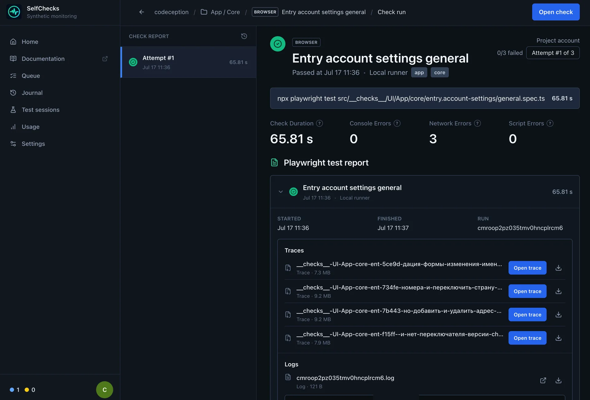
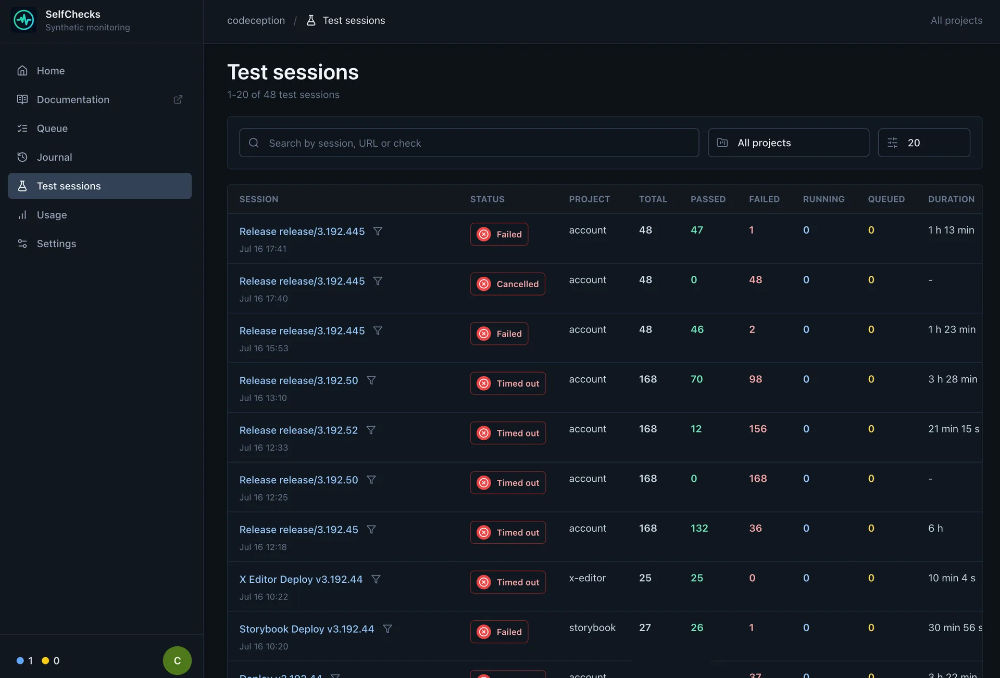

From an empty folder to a scheduled check
Create your first Selfchecks project
Keep monitoring next to your application code, run the same checks in CI, and deploy them to your own Selfchecks server.
- 01CreateScaffold a Node.js project
- 02ConfigureSet project defaults
- 03TestAdd API and browser checks
- 04DeployUpload to your server
Step 1
Create the project
Selfchecks scans the project recursively for
.check.ts manifests. Keep Playwright specs and their
manifests together so entrypoints remain clear.
npx create-selfchecks my-checks
cd my-checks
npx playwright install chromium
npm testmy-checks/
├── package.json
├── playwright.config.ts
├── checkly.config.ts
└── checks/
├── homepage.check.ts
└── homepage.spec.tsStep 2
Add configuration
Playwright controls test behavior. The Checkly-compatible config defines project discovery and scheduling defaults using the current construct API.
import { defineConfig } from "@playwright/test";
export default defineConfig({
timeout: 60_000,
globalTimeout: 10 * 60_000,
use: {
baseURL: process.env.ENVIRONMENT_URL,
screenshot: "only-on-failure",
},
});import { defineConfig } from "@selfchecks/selfchecks";
import { Frequency } from "@selfchecks/selfchecks/constructs";
export default defineConfig({
projectName: "My checks",
logicalId: "my-checks",
checks: {
activated: true,
runtimeId: "2025.04",
frequency: Frequency.EVERY_10M,
locations: ["eu-west-1"],
checkMatch: "**/*.check.ts",
browserChecks: {
testMatch: "**/*.spec.ts",
},
},
});Step 3
Write a browser check
A browser check is a small manifest pointing to a normal Playwright Test spec. Selfchecks runs it in Chromium and records logs, screenshots, traces, videos, and performance data when available.
import { BrowserCheck, Frequency } from "@selfchecks/selfchecks/constructs";
new BrowserCheck("homepage", {
name: "Homepage",
activated: true,
tags: ["smoke", "browser"],
frequency: Frequency.EVERY_10M,
code: {
entrypoint: "homepage.spec.ts",
},
});import { expect, test } from "@playwright/test";
test("homepage is available", async ({ page }) => {
await page.goto("/");
await expect(page).toHaveTitle(/My product/i);
await expect(page.getByRole("main")).toBeVisible();
});
API checks
Choose the right API testing style
Use a native ApiCheck for a lightweight endpoint
monitor or the Playwright request fixture for richer
assertions and multi-step flows.
| Option | Use it for | Available API |
|---|---|---|
| ApiCheck | Fast health and HTTP status checks |
Method, URL, headers, body, and
{{ENV}} placeholders
|
| Playwright request | JSON assertions and multi-step API flows |
test, expect, request fixture,
hooks, and helpers
|
import { ApiCheck, Frequency } from "@selfchecks/selfchecks/constructs";
new ApiCheck("api-health", {
name: "API health",
activated: true,
tags: ["smoke", "api"],
frequency: Frequency.EVERY_10M,
request: {
method: "GET",
url: "{{ENVIRONMENT_URL}}/api/health",
headers: {
accept: "application/json",
},
},
});Dependencies
Modules you can use in tests
Remote runs install production dependencies from the uploaded
package.json, keeping the runtime reproducible.
Playwright Test
test, expect, page, context, request,
fixtures, and hooks.
Node.js built-ins
Modules such as node:crypto, node:fs,
node:path, and node:url.
Your local modules
Relative TypeScript or JavaScript helpers included in the uploaded project.
npm packages
Packages in dependencies that support the server's
Linux and Node.js runtime.
Migration
Keep existing Checkly imports
You do not have to rewrite every manifest. npm can install the
Selfchecks constructs package under the local name
checkly, so existing checkly and
checkly/constructs imports remain valid.
{
"devDependencies": {
"@selfchecks/selfchecks-cli": "latest",
"checkly": "npm:@selfchecks/selfchecks@latest"
},
"scripts": {
"selfchecks": "selfchecks"
}
}| Import | Supported subset |
|---|---|
checkly |
defineConfig |
| Checks | ApiCheck, BrowserCheck |
| Groups | CheckGroup, CheckGroupV2 |
| Frequency |
EVERY_10M, EVERY_15M,
EVERY_30M, EVERY_2H,
EVERY_3H, EVERY_6H,
EVERY_12H, EVERY_24H
|
| Assertions |
statusCode(), textBody(),
jsonBody(path) with equals,
contains, isEmpty,
isNotNull
|
| Retries |
noRetries, fixedStrategy,
linearStrategy,
exponentialStrategy
|
| Source compatibility |
AlertEscalationBuilder.runBasedEscalation,
WebhookAlertChannel, and the related
props/request types
|
Step 4
Deploy and run
Use deploy for the version scheduled checks should
run, test for an isolated CI session, and
trigger to run the latest deployment.
export SELFCHECKS_URL="https://checks.example.com"
export SELFCHECKS_API_TOKEN="<api-token>"
npx selfchecks --help# Upload the project and schedule its checks
selfchecks deploy --project my-project --root .
# Run the current source and keep the results
selfchecks test --project my-project --root . --record \
-e ENVIRONMENT_URL=https://staging.example.com
# Run the latest deployed version
selfchecks trigger --project my-project --record
Integration
Use the HTTP API directly
The CLI is a client for the authenticated Selfchecks HTTP API. Call it directly to trigger a deployment, inspect status, or build another integration.
curl --fail-with-body --request POST \
"$SELFCHECKS_URL/api/cli/triggers" \
--header "Authorization: Bearer $SELFCHECKS_API_TOKEN" \
--header "Content-Type: application/json" \
--data '{
"projectSlug": "my-project",
"reporter": "list",
"testSessionName": "Manual API run",
"env": [
{
"name": "ENVIRONMENT_URL",
"value": "https://staging.example.com"
}
]
}'{
"triggerId": "b472b7ce-…",
"status": "queued",
"statusUrl": "/api/cli/triggers/b472b7ce-…"
}| Method | Endpoint | Purpose |
|---|---|---|
| POST | /api/cli/deployments |
Upload a multipart project bundle and queue a deployment |
| GET | /api/cli/deployments/:deploymentId |
Read deployment status and import summary |
| POST | /api/cli/test-sessions |
Upload source and start a recorded test session |
| GET · DELETE | /api/cli/test-sessions/:sessionId |
Read results or cancel an active session |
| POST | /api/cli/triggers |
Run the latest deployed source for a project |
| GET | /api/cli/triggers/:triggerId |
Read trigger status and final run summary |
CI/CD
Set up GitLab CI/CD
Run the current commit for merge requests and the default branch, then deploy the successful default-branch revision for scheduled monitoring.
stages:
- test
- deploy
default:
image: node:20.19
before_script:
- npm ci
selfchecks:test:
stage: test
script:
- >-
npx selfchecks test
--project "$CI_PROJECT_PATH_SLUG"
--root .
--record
--reporter list
--test-session-name "GitLab #$CI_PIPELINE_IID"
--repository "$CI_PROJECT_PATH"
--ref "$CI_COMMIT_REF_NAME"
--commit-sha "$CI_COMMIT_SHA"
--pipeline-url "$CI_PIPELINE_URL"
--job-url "$CI_JOB_URL"
-e "ENVIRONMENT_URL=$ENVIRONMENT_URL"
rules:
- if: '$CI_PIPELINE_SOURCE == "merge_request_event"'
- if: '$CI_COMMIT_BRANCH == $CI_DEFAULT_BRANCH'
selfchecks:deploy:
stage: deploy
needs: ["selfchecks:test"]
script:
- npx selfchecks deploy --project "$CI_PROJECT_PATH_SLUG" --root .
rules:
- if: '$CI_COMMIT_BRANCH == $CI_DEFAULT_BRANCH'CI/CD
Set up GitHub Actions
Run checks for pull requests and main, then deploy
the main revision after the test job succeeds.
name: Selfchecks
on:
pull_request:
push:
branches: [main]
workflow_dispatch:
permissions:
contents: read
jobs:
test:
runs-on: ubuntu-latest
env:
SELFCHECKS_URL: ${{ vars.SELFCHECKS_URL }}
SELFCHECKS_API_TOKEN: ${{ secrets.SELFCHECKS_API_TOKEN }}
ENVIRONMENT_URL: ${{ vars.ENVIRONMENT_URL }}
steps:
- uses: actions/checkout@v6
- uses: actions/setup-node@v6
with:
node-version: 20
cache: npm
- run: npm ci
- name: Run Selfchecks
run: >-
npx selfchecks test
--project "$GITHUB_REPOSITORY"
--root .
--record
--reporter github
--test-session-name "GitHub #$GITHUB_RUN_NUMBER"
--repository "$GITHUB_REPOSITORY"
--ref "$GITHUB_REF_NAME"
--commit-sha "$GITHUB_SHA"
--pipeline-url "$GITHUB_SERVER_URL/$GITHUB_REPOSITORY/actions/runs/$GITHUB_RUN_ID"
-e "ENVIRONMENT_URL=$ENVIRONMENT_URL"
deploy:
if: github.event_name == 'push' && github.ref == 'refs/heads/main'
needs: test
runs-on: ubuntu-latest
env:
SELFCHECKS_URL: ${{ vars.SELFCHECKS_URL }}
SELFCHECKS_API_TOKEN: ${{ secrets.SELFCHECKS_API_TOKEN }}
steps:
- uses: actions/checkout@v6
- uses: actions/setup-node@v6
with:
node-version: 20
cache: npm
- run: npm ci
- run: npx selfchecks deploy --project "$GITHUB_REPOSITORY" --root .Self-hosting
Deploy your own server
Selfchecks ships as a Docker Compose stack with the web app, worker, PostgreSQL, Redis, migrations, and Caddy for HTTPS.
curl -fsSL https://github.com/selfchecks/selfchecks/releases/download/bootstrap/bootstrap.sh | sudo bash